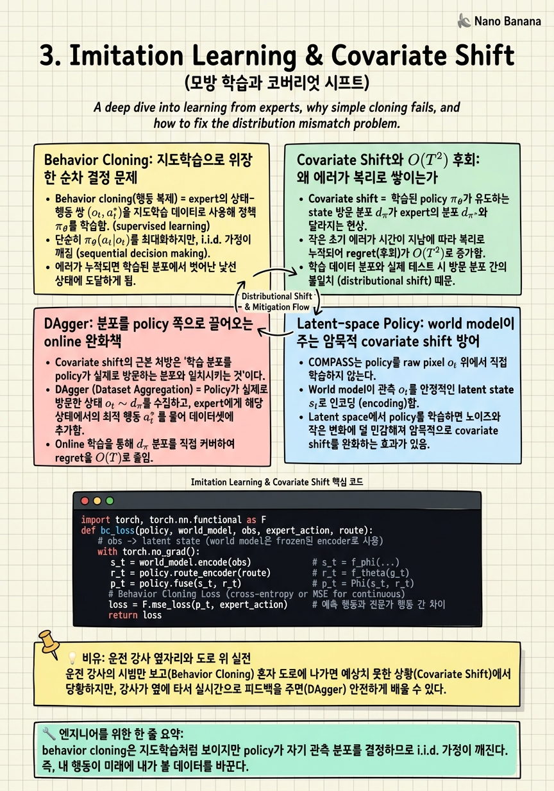

Imitation Learning & Covariate Shift

🎯 학습 목표
- behavior cloning과 covariate shift의 관계를 수식 수준에서 이해한다
- classical mobility stack을 teacher로 쓰는 이유와 장단점을 안다
- DAgger 등 covariate shift 완화 기법의 원리를 설명할 수 있다
- latent space에서 policy를 학습할 때의 이점을 이해한다
- IL의 한계가 residual RL 도입을 정당화하는 논리를 재구성할 수 있다
이전 챕터에서 우리는 X-Mobility가 raw observation을 압축된 latent state로 요약하고 미래를 예측하는 world model이라는 것을 보았다. 이 챕터는 그 world model 위에 첫 번째 policy를 어떻게 얹는가를 다룬다. COMPASS(arXiv:2502.16372)의 3단계 파이프라인 IL→Residual RL→Distillation 중 첫 단계, 즉 imitation learning(IL)이 오늘의 주제다. 핵심 질문은 단순하다 — 강화학습은 sparse-reward navigation에서 수백만 스텝을 태워도 잘 수렴하지 않는데, 그렇다면 policy를 어디서 시작할 것인가?
COMPASS의 대답은 '이미 존재하는 좋은 컨트롤러를 모방하라'다. 로봇 커뮤니티에는 수십 년간 다듬어진 classical mobility stack(예: ROS의 Nav2)이 있다. 이들은 학습 기반이 아니지만 대부분의 평범한 상황에서 안정적으로 목표까지 로봇을 몰고 간다. COMPASS는 이 teacher policy로 대량의 시연을 값싸게 뽑아, world model latent 위에서 behavior cloning으로 mobility prior를 학습한다. 이것이 이후 residual RL과 distillation이 딛고 설 발판이 된다.
그러나 behavior cloning에는 이론적으로 불가피한 함정, covariate shift가 있다. 학습된 policy는 언젠가 teacher가 한 번도 보여주지 않은 state로 표류하고, 거기서 내린 나쁜 결정이 다음 state를 더 낯설게 만들어 에러가 복리로 쌓인다. 이 챕터는 covariate shift를 수식 수준에서 해부하고, DAgger 같은 고전적 완화책과 world model latent가 주는 암묵적 방어를 살펴본 뒤, '그래도 IL만으로는 부족하다'는 결론이 다음 챕터의 residual RL을 어떻게 필연적으로 불러오는지를 재구성한다.
핵심 내용
Behavior Cloning: 지도학습으로 위장한 순차 결정 문제
Behavior cloning(행동 복제) = expert의 상태-행동 쌍 \((o_t, a^*_t)\)을 지도학습 데이터로 보고, 관측을 행동으로 매핑하는 함수를 회귀/분류로 맞추는 것.
COMPASS의 IL 단계에서 데이터는 teacher policy가 만든 시연 집합 \(D=\{(o_0,a^*_0,\dots,o_T,a^*_T)\}\)이다. 여기서 \(a^*\)는 teacher(classical stack)의 행동이고, raw observation은 \(o_t=(I_t, v_t)\) — 이미지 \(I_t\)와 로봇 자기속도 \(v_t\)의 쌍이다. Policy는 이 데이터에서 다음 목적함수를 최소화한다.
\[\min_\theta \; \sum_t \ell\big(\pi^{IL}_\theta(p_t),\, a^*_t\big)\]
여기서 \(\ell\)은 회귀 손실(연속 행동이므로 보통 MSE)이고 \(p_t\)는 뒤에서 설명할 fused latent다. 겉보기엔 평범한 지도학습이지만, 결정적 차이가 하나 있다 — 이 데이터는 i.i.d.가 아니다. 표준 지도학습은 test 분포가 train 분포와 같다고 가정하지만, policy를 로봇에 올리는 순간 policy 자신의 행동이 다음 관측을 결정한다. 즉 test-time state 분포는 policy에 의존한다.
이 의존성이 IL을 단순 회귀가 아니라 순차 결정 문제로 만든다. 학습할 때 policy는 항상 teacher가 방문한 '좋은' state에서 정답을 배우지만, 배포되면 자기 실수로 teacher가 결코 방문하지 않은 state에 도달한다. 거기서는 학습 신호가 전혀 없어 행동이 사실상 무작위에 가까워지고, 그 나쁜 행동이 다음 state를 더 낯설게 만든다. 이것이 다음 절에서 다룰 covariate shift의 씨앗이다.
Covariate Shift와 O(T²) 후회: 왜 에러가 복리로 쌓이는가
Covariate shift = 학습된 policy가 유도하는 state 방문 분포 \(d_{\pi}\)가 expert의 분포 \(d_{\pi^*}\)와 달라지는 현상. IL이 실패하는 근본 원인이다.
직관은 이렇다. 매 스텝 policy가 expert와 다르게 행동할 확률을 \(\epsilon\)이라 하자. 지도학습이라면 총 기대 실수는 \(O(\epsilon T)\)로 선형이다. 그러나 순차 문제에서는 한 번의 실수가 다음 state를 train 분포 밖으로 밀어내고, 그 밖에서는 실수 확률이 더 커진다. Ross et al.의 고전 결과(DAgger, 2011)는 이 누적 효과가 최악의 경우 \(O(\epsilon T^2)\)의 후회(regret)를 낳음을 보인다.
\[J(\pi) - J(\pi^*) \;\leq\; O(\epsilon\, T^2)\]
\(T\)가 커질수록(긴 horizon의 navigation) 이 이차항이 치명적이 된다. 실전 번역: teacher를 90% 정확도로 복제해도, 256스텝 에피소드에서 한 번 코너를 잘못 돌아 낯선 복도로 들어서면 그 다음부터는 배운 적 없는 상황의 연속이라 회복하지 못하고 벽에 처박힌다. 이것이 pure BC의 navigation policy가 '조용한 실패'를 겪는 메커니즘이다.
COMPASS 저자들이 특히 강조하는 점은, humanoid처럼 복잡한 modality에서는 애초에 고품질 teacher 시연을 만드는 것 자체가 어렵다는 것이다. Wheeled 로봇은 성숙한 classical stack이 있어 데이터가 값싸지만, 다리 달린 로봇에는 그런 범용 teacher가 없다. 그래서 IL로 얻는 prior의 품질이 embodiment마다 들쭉날쭉하고, 이 불균형이 '모든 embodiment를 IL만으로 완성한다'는 선택지를 처음부터 배제한다. 결국 IL은 완성품이 아니라 좋은 초기화를 제공하는 역할로 자리매김된다.
DAgger: 분포를 policy 쪽으로 끌어오는 online 완화책
Covariate shift의 근본 처방은 '학습 분포를 policy가 실제로 방문하는 분포와 일치시키는 것'이다. DAgger(Dataset Aggregation) = policy를 굴려 policy가 방문한 state를 수집하고, 그 state에 대해 expert에게 정답 라벨을 물어 데이터셋에 계속 합치는 반복 절차(Ross et al. 2011).
알고리즘의 뼈대는 다음과 같다. (1) 현재 policy \(\pi_i\)로 궤적을 굴린다. (2) 그 궤적의 각 state \(o_t\)에 대해 expert \(\pi^*\)가 무엇을 했을지 라벨 \(a^*_t\)를 얻는다. (3) 이 새 쌍들을 누적 데이터셋 \(D \leftarrow D \cup \{(o_t, a^*_t)\}\)에 합쳐 policy를 다시 학습한다. 반복하면 학습 분포가 점점 \(d_{\pi}\)로 수렴하고, no-regret online learning 관점에서 후회가 \(O(\epsilon T^2)\)에서 \(O(\epsilon T)\)의 선형 영역으로 내려온다.
DAgger의 결정적 전제는 query 가능한 expert다. 즉 policy가 만든 임의의 낯선 state에 대해서도 expert가 즉석에서 정답을 줄 수 있어야 한다. 바로 여기서 classical mobility stack을 teacher로 쓰는 선택이 빛난다 — Nav2 같은 stack은 학습된 정적 데이터셋이 아니라 실행 가능한 알고리즘이므로, 어떤 state를 던져도 즉시 행동을 계산해 준다. 사람 시연이 teacher라면 불가능한 online labeling이 classical teacher에서는 공짜다.
그러나 DAgger에도 한계가 있다. teacher 자신이 도달할 수 없거나 애초에 어떻게 행동해야 할지 모르는 state(예: 넘어지기 직전의 humanoid)에서는 teacher의 라벨이 무의미해진다. teacher의 성능이 곧 policy 성능의 상한이 되는 것이다. 즉 DAgger는 covariate shift를 완화하지만 teacher를 능가하게 만들지는 못한다. 이 상한을 뚫으려면 라벨을 모방하는 대신 환경의 reward로부터 직접 개선하는 신호가 필요하고, 그것이 다음 챕터 residual RL의 존재 이유다.
Latent-space Policy: world model이 주는 암묵적 covariate shift 방어
COMPASS는 policy를 raw pixel 위에서 학습하지 않는다. 대신 world model이 만든 latent state 위에서 학습한다. 이 설계가 covariate shift에 대한 세 번째 방어선이 된다.
구조를 따라가 보자. World model은 latent transition \(s_t=f_\phi(s_{t-1}, a_{t-1})\)로 상태를 굴리고 reconstruction \(\hat{o}_t=g_\psi(s_t)\)로 관측을 복원하도록 학습된다. 목표(goal)는 route로 주어지며 route encoding \(r_t=f_\theta(g_t)\)로 인코딩되고, latent state와 route가 fusion되어 \(p_t=\Phi(s_t, r_t)\)가 만들어진다. 최종 행동은 이 fused representation에서 나온다 — \(a_t=\pi^{IL}_\theta(p_t)\). 즉 policy가 보는 것은 픽셀이 아니라 '미래를 예측하도록 훈련된 압축 표현'이다.
왜 이것이 covariate shift를 완화하는가? world model은 미래 관측과 latent를 예측하도록 학습되므로, 표현 공간이 로봇 dynamics의 매끄러운 manifold를 따라 구조화된다. 낯선 관측이 들어와도 그것이 latent manifold 위의 가까운 점으로 투영되는 경향이 있어, policy가 '완전히 처음 보는 입력'을 만날 확률이 raw pixel보다 낮다. 다시 말해 world model이 OOD state를 in-distribution latent로 흡수해 주는 정규화 효과를 낸다.
또 하나의 실질적 이점은 데이터 효율이다. 고차원 픽셀에서 직접 행동을 회귀하려면 방대한 시연이 필요하지만, 이미 사전학습된 latent 위에서는 훨씬 적은 시연으로 mobility prior가 잡힌다. 정리하면, latent-space policy는 (a) 표현 정규화로 covariate shift를 줄이고 (b) sample efficiency를 높인다. 그럼에도 이것은 완화이지 해결이 아니다 — 예측 표현이 아무리 좋아도, teacher를 모방하는 신호 자체에는 '나쁜 state에서 회복하는 법'이 들어 있지 않기 때문이다.
IL의 한계가 residual RL을 부르는 논리
이 챕터의 모든 실이 여기서 하나로 묶인다. IL 단계는 세 가지를 준다 — (1) classical teacher의 값싼 대량 시연, (2) world model latent 위의 강한 mobility prior, (3) DAgger·latent 정규화로 완화된(그러나 제거되지 않은) covariate shift. 그리고 세 가지를 주지 못한다 — teacher를 능가하는 능력, teacher가 없는 embodiment에서의 견고함, 진짜 OOD 회복.
이 결핍을 메우는 신호는 본질적으로 다르다. IL은 '전문가가 무엇을 했는가'라는 라벨을 모방하지만, 필요한 것은 '이 행동이 목표 달성에 좋았는가'라는 결과 신호, 곧 reward다. Reward는 teacher가 방문하지 못한 state에서도 정의되므로, policy가 스스로 표류한 낯선 곳에서 회복하는 법을 배울 수 있다. 이것이 IL과 RL의 근본적 상보성이다.
그렇다면 왜 처음부터 RL만 하지 않는가? 다음 챕터에서 정량적으로 보겠지만, sparse-reward navigation에서 RL-from-scratch는 IL base 없이는 1000 에피소드에도 수렴하지 못한다. 목표에 우연히 도달해야만 첫 보상이 생기는데, 무작위 초기 policy가 2~5m 떨어진 목표에 우연히 닿을 확률이 사실상 0이기 때문이다. 즉 RL은 '무엇이 좋은지' 알려주지만 '어디서 시작할지'는 알려주지 못한다.
여기서 COMPASS의 설계 철학이 드러난다 — IL이 강한 초기화(where to start)를 주고, RL이 결과 기반 개선(what is good)을 준다. 이 둘을 덧셈으로 결합하는 것, 즉 frozen IL base 위에 작은 residual을 학습하는 것이 다음 챕터의 residual RL이다. IL을 버리지 않고 그 위에 얹는 이유, base를 freeze하는 이유가 모두 이 논리에서 나온다. IL은 실패한 접근이 아니라, RL이 딛고 설 유일하게 견고한 발판이다.
💡 비유로 이해하기
Behavior cloning은 조수석에서 베테랑 강사의 운전을 며칠 지켜보고 그대로 흉내 내는 것과 같다. 강사는 항상 차선 한가운데, 적절한 속도의 '좋은 상태'만 보여준다. 그래서 당신은 좋은 상태에서 무엇을 해야 하는지는 완벽히 배우지만, 차가 차선 밖으로 반쯤 벗어난 상황은 한 번도 본 적이 없다. 강사는 그런 실수를 하지 않으니까.
혼자 운전대를 잡는 순간 문제가 터진다. 작은 실수로 차가 살짝 갓길로 쏠리면, 그 상황은 '강사가 보여준 적 없는 낯선 장면'이고 당신은 어떻게 되돌려야 할지 모른다. 잘못된 조작이 차를 더 밖으로 밀어내고, 그 다음은 더 낯설어지고 — 이것이 covariate shift가 에러를 복리로 키우는 방식이다.
DAgger는 강사를 조수석에 계속 태우고, 당신이 실수로 갓길에 갔을 때 '이럴 땐 이렇게 핸들을 돌려'라고 그 자리에서 정답을 알려주는 것이다. 하지만 강사조차 겪어본 적 없는 상황(빙판 위 스핀)에서는 강사도 답이 없다. 결국 진짜 실력은 도로에서 직접 미끄러져 보고 '이렇게 하니 회복되더라'는 결과를 몸으로 익힐 때 생긴다 — 그 결과 기반 학습이 바로 다음 챕터의 RL이다.
💻 코드 예시
IL 단계의 두 축을 스케치한다. (1) latent 위의 behavior cloning loss, (2) classical teacher를 online으로 query하는 DAgger aggregation loop. teacher는 query 가능한 알고리즘(Nav2류)이라는 점이 DAgger를 성립시키는 핵심이다.
import torch, torch.nn.functional as F
def bc_loss(policy, world_model, obs, expert_action, route):
# obs -> latent state (world model은 frozen된 encoder로 사용)
with torch.no_grad():
s_t = world_model.encode(obs) # s_t = f_phi(...)
r_t = policy.route_encoder(route) # r_t = f_theta(g_t)
p_t = policy.fuse(s_t, r_t) # p_t = Phi(s_t, r_t)
a_pred = policy.actor(p_t) # a_t = pi_theta(p_t)
return F.mse_loss(a_pred, expert_action) # regression to teacher
def dagger_epoch(policy, world_model, teacher, env, dataset, opt, beta):
# beta: teacher를 직접 실행할 확률 (초기 1.0 -> 점차 0)
obs = env.reset()
for t in range(env.max_steps):
a_star = teacher.query(obs) # classical stack: 어떤 state든 라벨 제공
with torch.no_grad():
s_t = world_model.encode(obs)
a_pi = policy.actor(policy.fuse(s_t, policy.route_encoder(obs['route'])))
# policy가 방문한 state를 teacher 라벨과 함께 누적 (분포를 d_pi로 이동)
dataset.add(obs, a_star)
# rollout은 mixture로: beta*teacher + (1-beta)*policy
act = a_star if torch.rand(1) < beta else a_pi
obs = env.step(act)
# aggregated dataset으로 policy 재학습
for obs_b, a_star_b in dataset.batches():
loss = bc_loss(policy, world_model, obs_b, a_star_b, obs_b['route'])
opt.zero_grad(); loss.backward(); opt.step()
return loss.item()bc_loss — policy가 raw pixel이 아니라 world model latent \(s_t\) 위에서 행동을 회귀한다는 점이 핵심이다. world_model.encode를 no_grad로 감싸 IL 단계에서 표현을 얼린 채 policy head만 학습하는 전형적 구성을 보여준다. route는 별도로 인코딩되어 fusion \(\Phi(s_t,r_t)\)로 합쳐지고, 손실은 teacher action에 대한 MSE — 즉 \(\min_\theta \sum_t \ell(\pi^{IL}_\theta(p_t), a^*_t)\)의 코드 형태다.
dagger_epoch — covariate shift 완화의 실체다. 매 스텝 teacher.query(obs)로 policy가 방문한 낯선 state에 대해서도 정답을 즉석에서 얻는다. 이것이 가능한 이유는 teacher가 정적 데이터셋이 아니라 실행 가능한 classical stack이기 때문이다(사람 시연이면 불가능). 수집된 \((obs, a^*)\)는 dataset.add로 누적되어 학습 분포를 \(d_\pi\) 쪽으로 이동시킨다.
beta mixture — 초기에는 teacher를 직접 굴려(\(\beta\approx1\)) 안전하게 좋은 궤적을 모으고, 점차 policy에 제어를 넘겨(\(\beta\to0\)) policy가 실제로 표류하는 state를 노출시킨다. 이 스케줄이 DAgger가 \(O(T^2)\) 후회를 \(O(T)\)로 낮추는 실질적 장치다. 단, teacher.query가 무의미한 state(회복 불가능한 넘어짐)에서는 이 라벨의 품질이 무너진다는 것이 IL의 구조적 한계이며, residual RL이 필요한 지점이다.
🏭 현업에서의 평가
✅ 시니어가 보는 것
- covariate shift를 i.i.d. 가정 위반으로 정확히 설명하고 O(T²) vs O(T) 후회 스케일을 언급하는가
- DAgger의 전제가 'query 가능한 expert'임을 알고, 그래서 classical stack teacher가 사람 시연보다 유리한 이유를 연결하는가
- IL을 완성품이 아니라 초기화로 프레이밍하고, RL과의 상보성(where to start vs what is good)을 설명하는가
- latent-space policy가 covariate shift와 sample efficiency 양쪽에 주는 이점을 world model 예측 목표와 연결하는가
⚠️ 레드 플래그
- covariate shift를 단순히 '데이터가 부족하다'로 뭉뚱그리고 분포 이동을 언급하지 못함
- DAgger를 '데이터를 더 모으는 것'으로만 이해하고 online expert query라는 핵심 전제를 놓침
- 'IL이 안 되면 RL을 더 하면 된다'며 sparse-reward에서 from-scratch RL이 수렴 못 함을 모름
- teacher 성능이 BC/DAgger policy의 상한이라는 점을 인지하지 못함
🎤 예상 인터뷰 질문
- Behavior cloning이 지도학습처럼 보이는데 왜 test error가 O(εT)가 아니라 O(εT²)로 커질 수 있는지 유도해 보라.
- DAgger가 covariate shift를 줄이는 원리를 설명하고, 사람 시연 대신 classical planner를 teacher로 쓸 때 무엇이 달라지는지 말하라.
- world model latent 위에서 policy를 학습하는 것이 raw pixel BC보다 OOD에 강한 이유를 표현 학습 관점에서 논하라.
✨ 핵심 요약
BC는 위장한 순차 문제
behavior cloning은 지도학습처럼 보이지만 policy가 자기 관측 분포를 결정하므로 i.i.d. 가정이 깨진다.
Covariate shift = 분포 이동
policy가 방문하는 state 분포 d_π가 expert 분포에서 벗어나며 에러가 복리로 누적된다.
O(T²) 후회
한 번의 실수가 낯선 state를 낳아 긴 horizon에서 후회가 스텝 수의 제곱으로 커진다.
DAgger는 online 완화책
policy가 방문한 state를 expert에게 라벨링받아 학습 분포를 d_π로 끌어와 후회를 선형으로 낮춘다.
Classical teacher는 query 가능
Nav2류 stack은 실행 가능한 알고리즘이라 어떤 state든 즉석 라벨을 주므로 DAgger의 전제를 공짜로 만족한다.
Latent가 암묵적 방어
world model latent는 예측 목표로 정규화된 표현이라 OOD 관측을 흡수하고 sample efficiency도 높인다.
teacher가 성능 상한
IL·DAgger는 teacher를 능가하지 못하고, teacher가 없는 embodiment에서는 prior 품질이 무너진다.
IL은 발판, RL이 다음
결과(reward) 신호의 부재가 IL의 마지막 한계이며, 이를 메우는 residual RL이 필연적으로 등장한다.